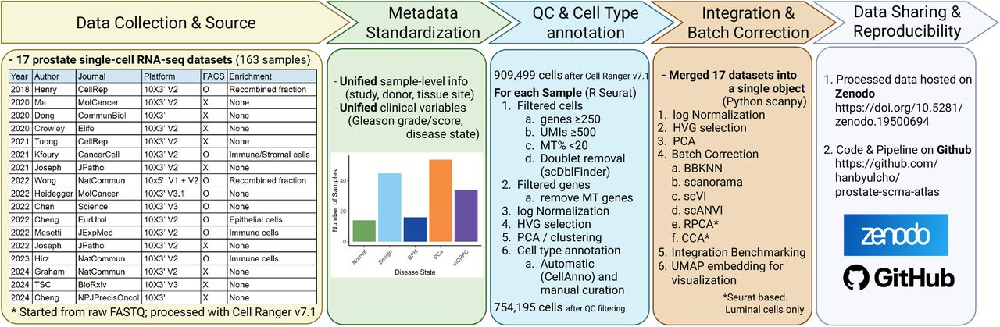
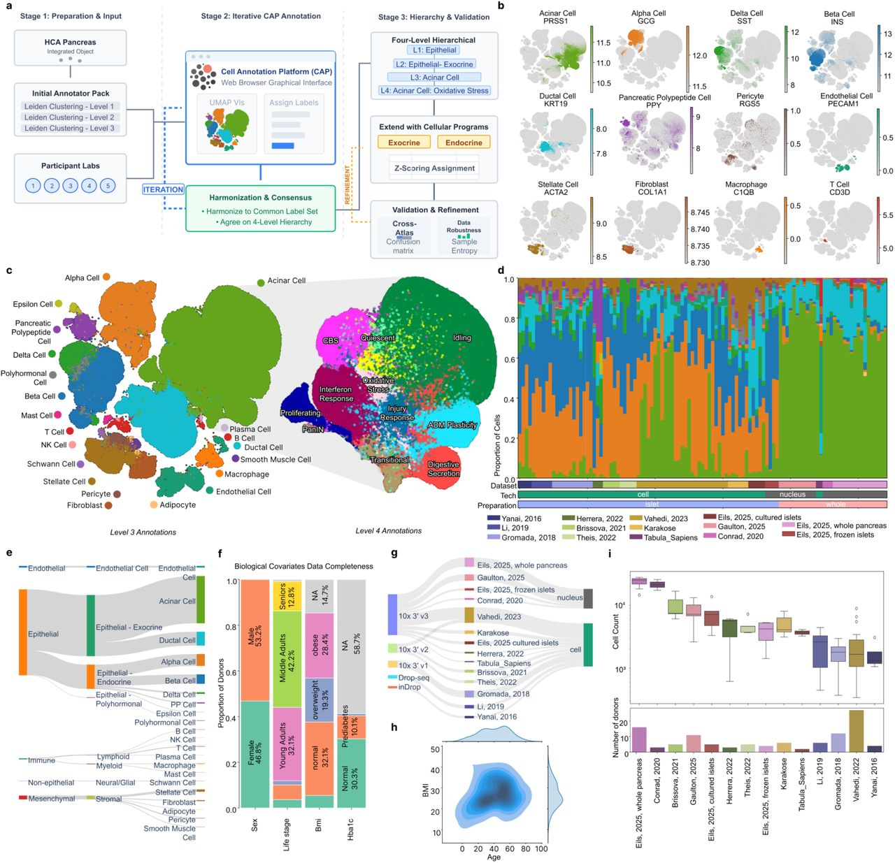
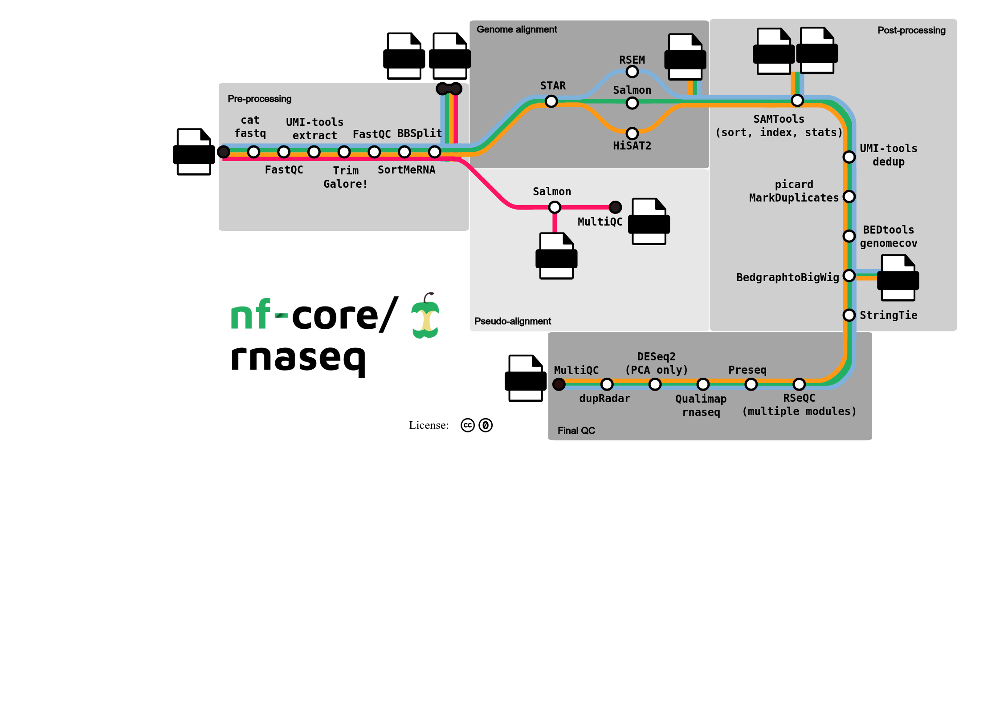

Atlas of single-cell transcriptomes: datasets description, and pipeline
Source:vignettes/atlas_construction.qmd
1 Datasets description for the construction of the consensus single-cell transcriptomic atlas
Table 1 summarises published single-cell and spatial transcriptomic atlases relevant to gastrulation, organoid, and related developmental models, including public dataset access and code repositories where available.
Rows are drawn from data/gastruloid_and_atlas_merged.csv where catalogue == "atlas".
The Pijuan-Sala mouse gastrulation map (Pijuan-Sala et al. 2019) is also available as a Bioconductor MouseGastrulationData object for annotating observed cell types in gastruloids (Marioni Lab 2024).
| Title | Authors | DOI | Year | Journal | Species | Study type | Bulk transcriptomics | Single-cell transcriptomics | Imaging | Spatial transcriptomics | Spatial proteomics | ChIP-seq | Metabolomics | Proteomics | Lineage barcoding | Time points (days) | Tissues | Summary | Public links |
|---|---|---|---|---|---|---|---|---|---|---|---|---|---|---|---|---|---|---|---|
| A spatiotemporal atlas of mouse gastrulation and early organogenesis to explore axial patterning and project in vitro models onto in vivo space | 10.1016/j.celrep.2025.116047 | 2025 | Cell Reports | Mouse | primary | ❌ | ✅ | ❌ | ✅ | ❌ | ❌ | ❌ | ❌ | ❌ | Gastrulation to early organogenesis (embryonic-day axis; see article) | Whole embryo; axial patterning; mesoderm; neural; endoderm | Spatiotemporal mouse gastrulation atlas integrating spatial transcriptomics with scRNA-seq for in vitro projection. | https://doi.org/10.1016/j.celrep.2025.116047 | |
| An integrated transcriptomic cell atlas of human endoderm-derived organoids | Xu, Q.; Camp, J.G. | 10.1038/s41588-025-02182-6 | 2025 | Nature Genetics | Human | primary | ❌ | ✅ | ❌ | ❌ | ❌ | ❌ | ❌ | ❌ | ❌ | Multi-protocol meta-atlas (variable culture ages across source studies) | Endoderm; lung; intestine; liver; biliary; stomach; pancreas; prostate | HEOCA (~1M cells) integrates endoderm organoid sc/snRNA-seq to assess protocol fidelity vs primary tissues. | CELLxGENE HEOCA; GSE287233; Zenodo 10.5281/zenodo.8181495; https://github.com/devsystemslab/HEOCA |
| An integrated transcriptomic cell atlas of human neural organoids | He, Z.; Treutlein, B. | 10.1038/s41586-024-08172-8 | 2024 | Nature | Human | primary | ❌ | ✅ | ❌ | ❌ | ❌ | ❌ | ❌ | ❌ | ❌ | Multi-protocol meta-atlas (~7–450 culture days across source studies) | Neural; brain organoids | HNOCA (>1.7M cells; 26 protocols) maps neural organoid coverage vs developing brain references. | CELLxGENE HNOCA; Zenodo 10.5281/zenodo.11203684; https://github.com/devsystemslab/HNOCA-tools |
| Single-cell and spatial transcriptomics reveal somitogenesis in gastruloids | van den Brink, S.C.; van Oudenaarden, A. | 10.1038/s41586-020-2024-3 | 2020 | Nature | Mouse | primary | ❌ | ✅ | ✅ | ✅ | ❌ | ❌ | ❌ | ❌ | ❌ | ~2–5 (gastruloid culture days; tomo-seq mainly at ~120 h / day 5) | NMP; somite/presomitic mesoderm; neural; endoderm; mesoderm | Gastruloid–embryo scRNA-seq + tomo-seq atlas of somitogenesis and A–P organisation. | GSE123187; https://avolab.hubrecht.eu/MouseGastruloids2020; GitHub anna-alemany/vincentvbatenburg |
| A single-cell molecular map of mouse gastrulation and early organogenesis | Pijuan-Sala, B.; Marioni, J.C. | 10.1038/s41586-019-0933-9 | 2019 | Nature | Mouse | primary | ❌ | ✅ | ❌ | ❌ | ❌ | ❌ | ❌ | ❌ | ❌ | E6.5–E8.5 (~embryonic days; 9 sequential collections) | Whole embryo; pluripotent epiblast; mesoderm; endoderm; ectoderm | In vivo molecular roadmap of lineage diversification during mouse gastrulation (~116k cells). | E-MTAB-6967; Bioconductor MouseGastrulationData; https://marionilab.cruk.cam.ac.uk/MouseGastrulation2018/; https://github.com/MarioniLab/EmbryoTimecourse2018 |
2 Related atlas construction: prostate and pancreas references
Beyond gastrulation/organoid atlases, recent tissue-scale atlas projects are useful comparators for integration design. Table 2 summarises two preprints that document harmonisation, batch correction and annotation choices in detail—one prostate cancer atlas (Cho et al. 2026) and one healthy pancreas reference (Parikh et al. 2026).


3 Visualising pipelines with MetroFlow
MetroFlow (BioFlow-Insight) is a Nextflow-like workflow visualisation tool: it renders pipeline DAGs as metro-map / transit schematics, which helps compare atlas construction graphs (ingest → QC → HVG → integration → annotation → trajectories) across projects (ShareFAIR / LIRIS CNRS 2024).

4 Standard pipeline for integrating multiple single-cell datasets
- Metadata curation and harmonisation
-
sfairafor dataset management and storage of single-cell collections
-
- Common feature space
- Restrict to protein-coding genes, or exclude long non-coding RNAs as appropriate for the atlas design
- Cell selection
- Hard thresholds on mitochondrial content and percentage of expressed genes; also remove cells with low ribosomal content
- Doublet removal (not always done in Fabian’s atlas papers)
- Normalisation / transformation
- Selection of HVGs (highly variable genes)
- Transformation variants of log-normalisation: logCPM, TPM,
ScTransform, VST
- Data integration across batches (batch-effect removal)
- Non-integrated projection:
- PCA + selection of most contributing features
- Alternatives: kNN + UMAP; Leiden clustering
- Projection onto a reference atlas using RSS (reference similarity spectrum; related to MDS), followed by bipartite weighted kNN and UMAP
- Cell-type annotation:
-
Snapseed: marker-based + hierarchical labelling (three levels)
-
-
Label-aware integration:
-
scPoli: conditional VAE for batch correction / semi-supervised granular strategy; embeds batch in its own latent space (e.g. 5-D in the neural atlas)
-
- Non-integrated projection:
- Pseudotime inference and cell trajectories
-
Pseudotime inference — assign each cell a position along a continuous progression axis
- Example:
moscotuses optimal transport (time and/or spatial) to couple populations across time points; the cost function accounts for death, differentiation and birth
- Example:
-
Trajectory reconstruction / lineage graph inference — reconstruct the most likely graph or tree of branching lineages / cell-type transitions
- Examples:
CellRank,scVelo,Palantir,FateID,URD, …
- Examples:
- GPCCA (Generalized Perron Cluster Cluster Analysis): identifies macro-states (sources/roots), transient manifolds (branch points / internal nodes), and terminal states (absorbing attractors / leaves), via branched Schur decomposition
- Open question: how do pseudotime tools and GPCCA-style macro-state decompositions interplay in practice?
-
Pseudotime inference — assign each cell a position along a continuous progression axis